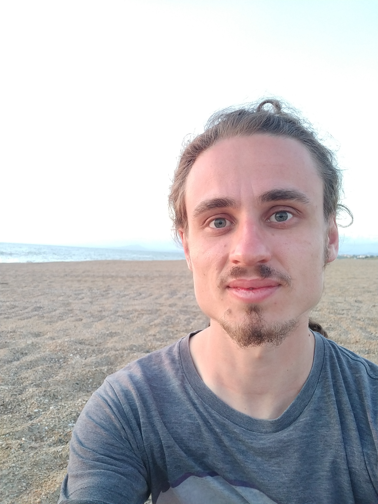

Alexandre Guillemot

Contact
Email : alexandre.guillemot@inria.fr
Affiliation : Inria
Location : Inria
Saclay, Bât. Alan Turing 1 rue Honoré d’Estienne d’Orves, 91120 Palaiseau, France.
Office : 1159
Team : Mathexp
Links : [Google scholar] [arXiv]
About me
I am a PhD student in the team Mathexp. My thesis is supervised by Pierre Lairez. I mainly focus on computer algebra, effective
algebraic geometry and topology.
Research
-
Alexandre Guillemot. Certified Algebraic Path Tracking
with Algpath.
2025. To appear. [hal][pdf] Issac '25 distinguished
software presentation!
Algpath is a certified homotopy continuation software. We upgrade the previous fixed-precision Rust
implementation by incorporating mixed, adaptive precision with minimal overhead. This allows us to
tackle problems on which the initial implementation fails due to the inability to increase
precision, and where uncertified methods may fail or path jump.
-
Alexandre Guillemot and Pierre
Lairez. Validated numerics for
algebraic path tracking. Proceedings of the 2024
International Symposium on Symbolic and
Algebraic Computation, 36–45. July 2024. [hal][doi][arxiv][pdf]
Using validated numerical methods, interval arithmetic and Taylor models, we propose a certified
predictor-corrector loop for tracking zeros of polynomial systems with a parameter. We provide a
Rust implementation which shows tremendous improvement over existing software for certified path
tracking.
Software
-
algpath, joint implementation with Pierre
Lairez
algpath is a Rust package for the rigorous computation of the
continuation of a regular zero of a parametrized polynomial system as the parameter varies.
-
algpath bench
algpath bench is a repository for homotopy continuation benchmarking. It is able to test
different packages on polynomial systems, and to process the results in the form of tables and
latex output.
-
braids
braids is a Rust package for the computation of braids induced by the displacement of the roots of a parametrized polynomial with complex coefficients.
It relies on algpath for the certified path tracking step.
Talks
-
Ouragan seminar,
imj-prg, December 2025. [slides]
-
Journées de géométrie algorithmique (Jga),
station biologique de Roscoff, October 2025. [slides]
-
Pascaline seminar,
LIP, ENS Lyon, September 2025. [slides]
-
International Symposium on Symbolic and Algebraic
Computation (ISSAC),
Center for Research in Mathematics (CIMAT), July-August 2025. [slides]
-
Applications of Computer Algebra (ACA),
Cultural Conference Center of Heraklion, July 2025. [slides]
-
SIAM Conference on Applied
Algebraic Geometry (AG),
University of Wisconsin Madison, July 2025. [slides]
-
Séminaire AG,
LMV, May 2025. [slides]
-
Journées Nationales de Calcul
Formel (JNCF),
CIRM, March 2025. [slides]
-
International Symposium on Symbolic and Algebraic
Computation (ISSAC), NC State University, July 2024. [slides]
-
Numerical Safety for Computer-Aided
Proofs (NUSCAP), LIP6, May 2024. [slides]
-
Journées Nationales de Calcul Formel (JNCF),
CIRM, March 2024. [slides]
Teaching
-
CSC_41011_EP - Les bases de la programmation et de l'algorithmique (teaching assistant, two groups),
École
polytechnique, fall 2025.
-
CSC_1S002_EP - Computer Programming (teaching assistant, one group), École
polytechnique, summer 2024.
-
CSC_41011_EP - Les bases de la programmation et de l'algorithmique (teaching assistant, two groups),
École
polytechnique, fall 2024.
-
MAA101 - Linear Algebra (teaching assistant, two groups), École
polytechnique, fall 2023.